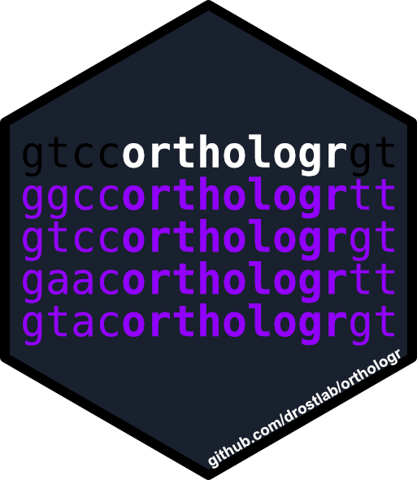

Select orthologs based on either gene locus or splice variant
Source:R/select_orthologs.R
select_orthologs.RdThis function selects orthologs based on either gene locus or splice variant.
Usage
select_orthologs(
dnds_tbl,
annotation_file_query,
annotation_file_subject,
collapse_by = "gene_locus",
format = c("gtf", "gtf")
)Arguments
- dnds_tbl
a tibble returned by
link{dNdS}.- annotation_file_query
file path to query annotation file in either
gtforgffformat.- annotation_file_subject
file path to query annotation file in either
gtforgffformat.- collapse_by
locus type by which orthologs should be determined. Options are:
type = "gene_locus": the splice variant having the lowest e-value of the BLAST search is chosen to represent the gene locus for the orthology relationship.type = "splice_variant": all splice variants of homologous gene loci will be returned.
- format
a vector of length 2 storing the annotation file formats of the query annotation file and subject annotation file: either
gtforgffformat. E.g.format = c("gtf","gtf").